2004年9月19日 十石峠自転車ツーリング
2004年の9月19日。夏休みをネトゲで無駄に潰してしまい、ロングツーリングが全然できなかったのだが、気を取り直して群馬と長野の県境にある国道299号十石峠にツーリングに出かけた。
群馬県の高崎線、新町駅からスタート。じつは本庄で降りたかったが寝過ごした。最初、泊りがけの予定だったので寝袋を積んでいる。
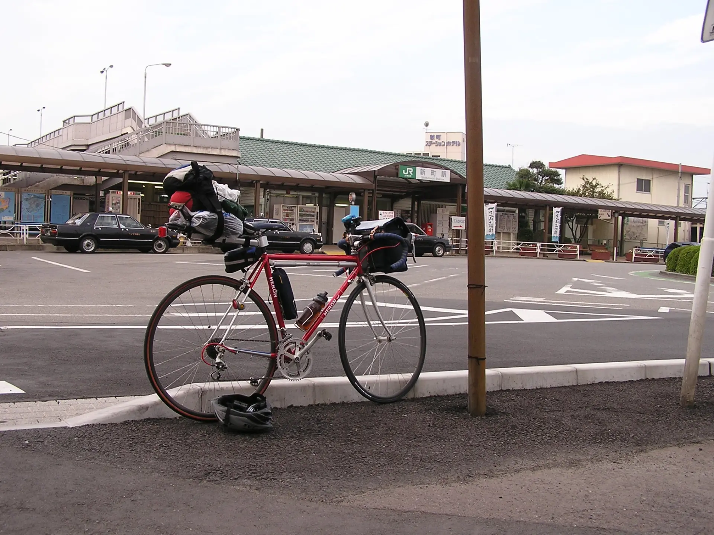国道462号をひたすら西へ進む。途中の写真は全然ない。神流町で国道299号と合流するまでは、2004年7月に志賀坂峠などへ行ったときとまったく同じ道である。
さて、群馬県上野村のかなり奥の方までやってきた。この写真の地点から一気に道が狭くなり、上りもきつくなる。Googlemapを見ると、2025年現在はかなり道路の拡幅や新道建設が行われているようだ。
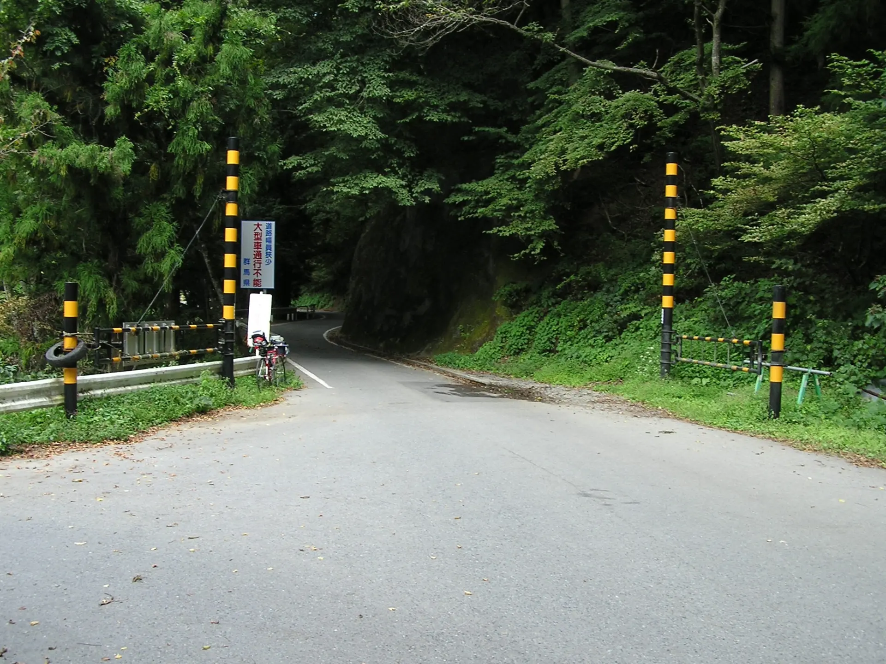ということで、群馬県・長野県県境の、国道299号線十石峠に着いた。十石峠は標高1,351m。
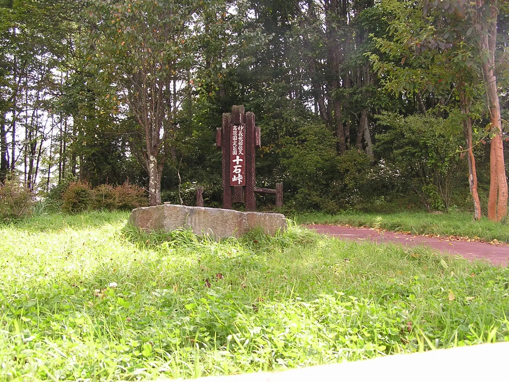 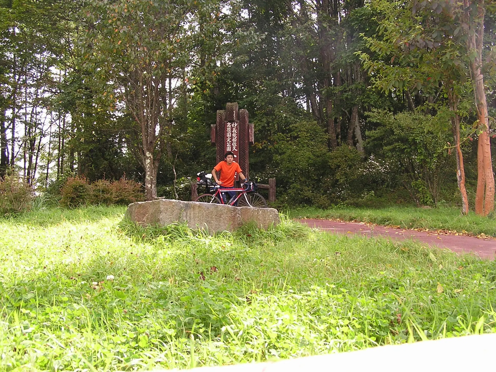ただ、このときの最大の記憶は、とにかく水が足りなかったということだ。9月だが非常に暑かったうえ、十石峠への登りの途中で水が尽きてしまい、ほうほうの体で峠までたどり着いた記憶がある。「飲むな」と書いてあるトイレの手洗い用水道水を飲んで回復した。
画像では佐久町となっているが、このあと平成の大合併で佐久穂町になったようだ。
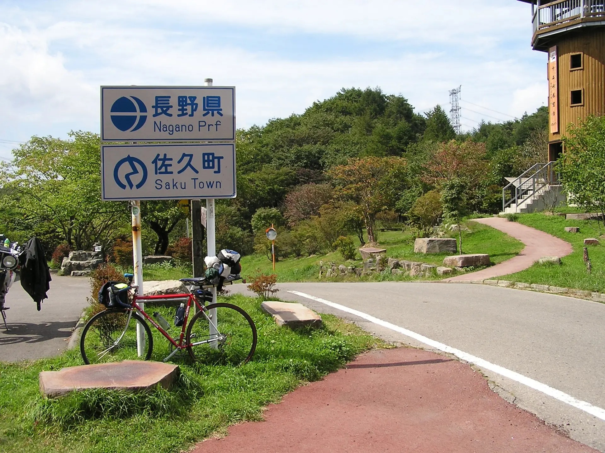十石峠全景。

峠を一気に下ったところに、小海線の海瀬駅があった。泊まり用装備を持ってきているので悩んだのだが、横着して輪行して日帰りで帰ることにした。
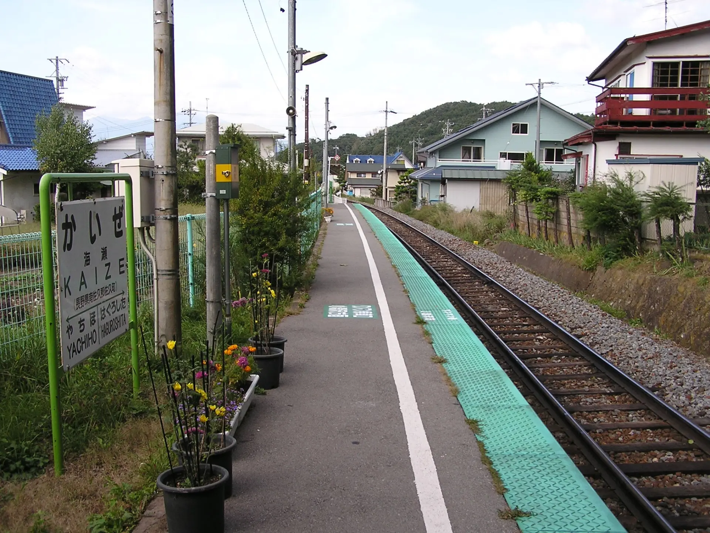小諸でしなの鉄道線に乗り換えて、軽井沢まで輪行した。国道18号の碓氷峠旧道を下る。
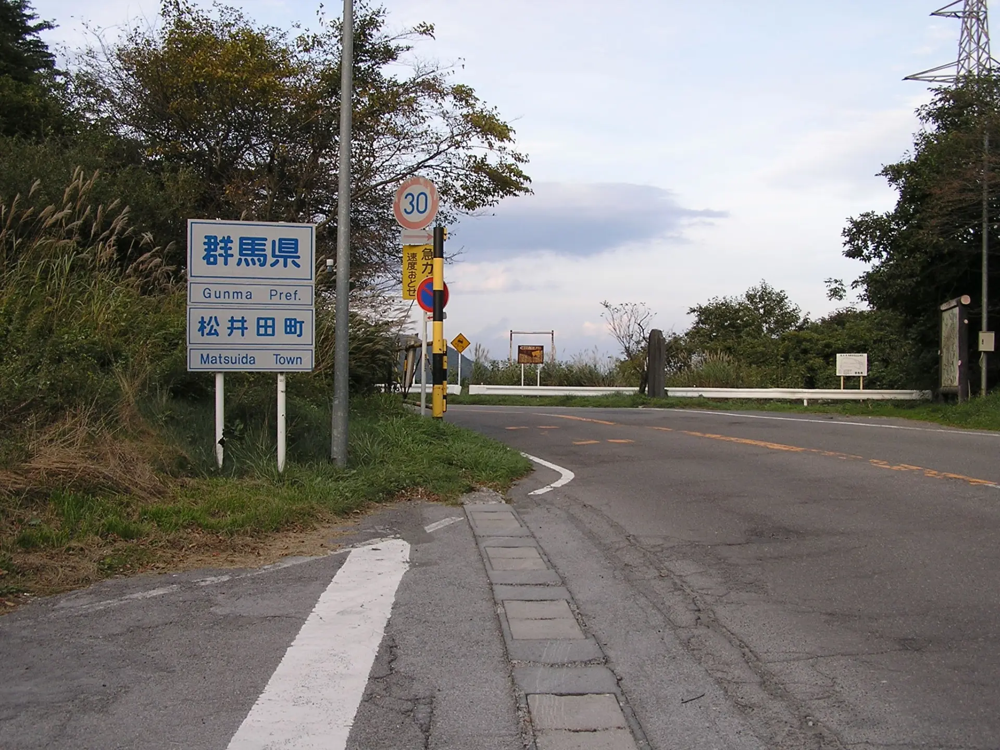途中、信越本線の碓氷峠廃線跡を見にいった。いまではかなり観光向けに整備されてしまったようだが、当時はまだそのまま放置されていた。
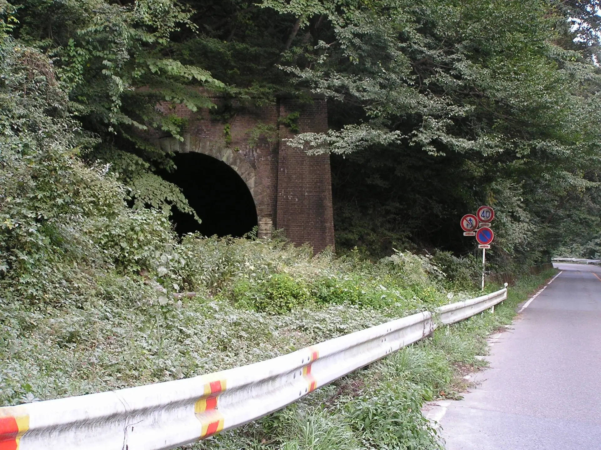 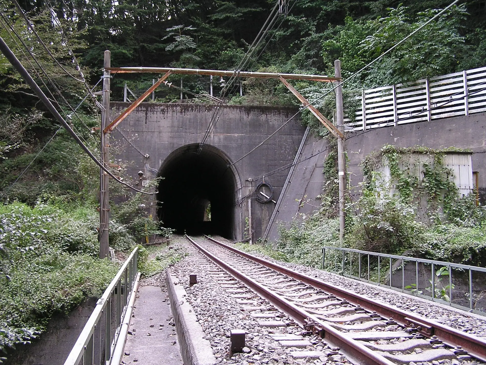 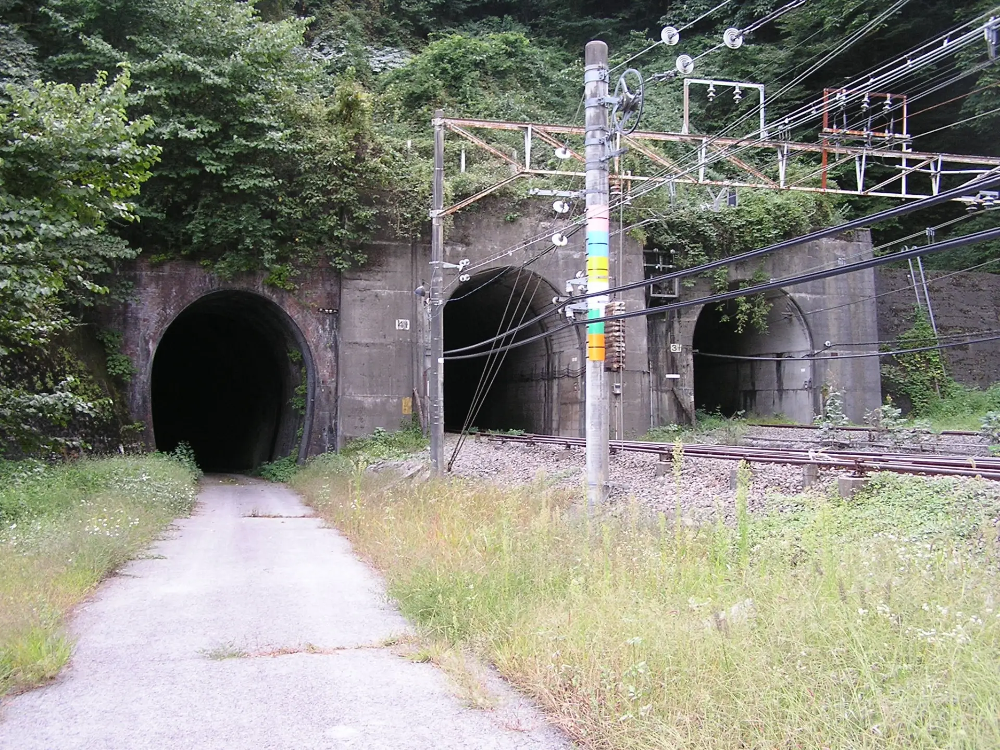 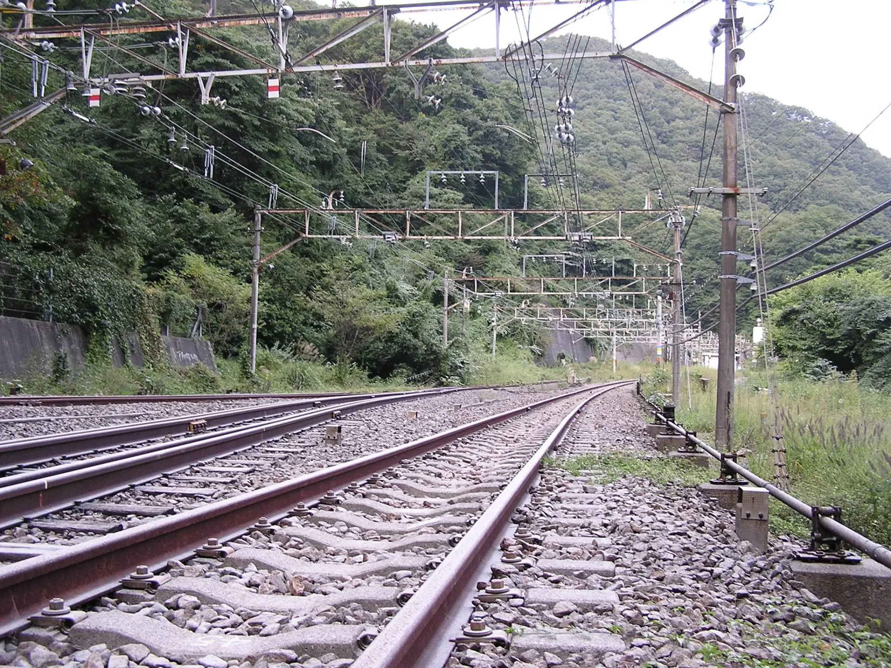このあと、横川から再度輪行して帰った。
2025年12月19日記事公開